Monday 15th June We landed in Bonaire after a very enjoyable 25 minute flight at about 10:35. The small plane only had about 15 passengers and did not get higher than about 3000ft. We had very good views as we left Curaçao and then on arrival in Bonaire. Due to the small number of passengers arriving, we were very quick getting through the airport and made our way over to the PB car hire office.
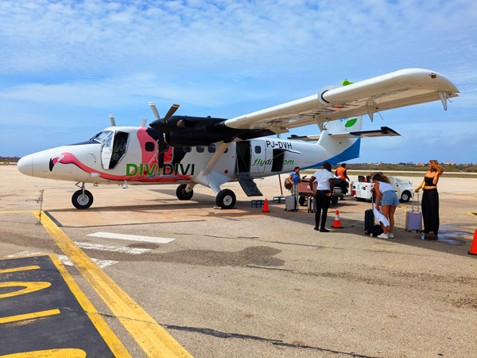
We had booked a truck for the next two weeks. We filled out the paperwork and paid before being told that the tailgate did not open on our truck. We said that this was not much good to us so the woman went off and got another truck... which also had a faulty tailgate which did not open. We had seen a couple dropping off their truck as we got there and said we would have that one. The woman amended the paperwork and off we went.
We had to pick up the keys to our apartment from the Sunrentals office near the supermarkets. We knew that we may not be able to get in the apartment straight away but were told that the apartment was ready and that we could go straight in. We then drove to Den Leman.
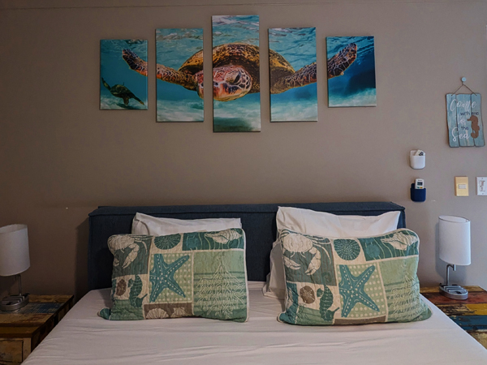
We have booked the "Flying Fish" apartment, the one above Parrotfish where we stayed the last time we were in Bonaire. The layout of the apartment is exactly the same as Parrotfish but the extra flight of stairs to get to it seems to make it quite a bit cheaper. The living room and balcony still have the same excellent views overlooking Klein Bonaire and the Dive Friends pier. We have the added bonus that the woman who owns the apartment seems to be as obsessed with turtles as Roz is! There are turtles everywhere.
We spent a while unpacking everything and then went out again. We drove into Kralendijk, parked the truck and went for lunch at Daily Catch, a fish restaurant where we had very good fish and chips. We had a wander round the town and found a couple of places that look as if they will be fine for watching the England games. We then drove out to The Warehouse and stocked up on food and drink for the next couple of weeks. After taking everything back to the apartment, we went down and checked in at Dive Friends. We have booked 2 x 6 day packages each meaning that we will dive 12 of the next 13 days. We filled in all the forms and will start our first package tomorrow morning.
We did not do a lot for the rest of the day (I didn't leave the apartment again). There is plenty of room on the balcony for sun-bathing and the television works and has channels showing the football We had planned to go and get a take-away in the evening but after a big lunch we did not really need much more to eat so we had rolls on the balcony instead. Had a night off alcohol.
Tuesday 16th June We took our gear down to the pier at 8:30 and set up our tanks. We had the briefing at 9 with three other divers. The whole thing was a bit pointless but thankfully did not go on for too long. By 9:22 we were back in the water at Bari Reef, the 133rd time we have dived this site! There have been plenty of times since we were last here that we had doubted we would ever return so it was very good to be back. The frog fish all appear to have moved on from where they were in 2022 and we only saw one green turtle but it was a very enjoyable dive again.
As usual here, we did not want to go too far on our first day of diving here so went to The Cliff for our second dive of the day. One green turtle on this dive as well.
We had decided that on this trip that we will probably stick to three dives a day instead of our usual four here. Apart from the fact that we are getting older, there is a lot of football to try and fit in this time! For our third dive we went back to Bari Reef but dived South towards Front Porch. I had read a trip report on Scuba Board from a few weeks ago with details of where to find both a sea-horse and a frog fish in the area near the small wreck.
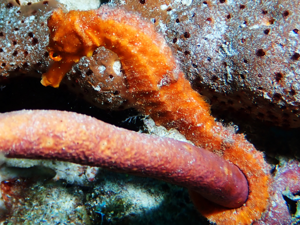
We went straight to that area and started looking for the sea-horse as soon as we got there. Roz found it almost straight away. It was a much better size than the one we had seen in Curaçao - at least you could tell it was a sea-horse without having to use a magnifying glass! After we had finished taking photos of the sea-horse, we went in search of the frog-fish. We found the correct concrete block but were unable to spot it. The current was starting to pick up a bit by now. This made it difficult to look for the frog-fish and also meant that we did not have much time as we would have liked as getting back to the the pier was going to need more air than usual. We also saw two octopus during the dive, the first within about 30 seconds of descending.
After washing our gear and hanging it in the gear room, we were back in the apartment by 6ish. We had an hour or so sorting out photos and getting things ready for tomorrow. We had a few nachos on the balcony while looking at the photos (mainly of the sea-horse). Tonight we did have take-aways. We walked over the road and got a couple of doner wraps from Döner Station. We ate them on the balcony before half watching the Argentina v Algeria match.
Wednesday 17th June An earlier start today as we wanted to get three dives in and get to a bar before the England v Croatia game at 16:00. We left the apartment at about 6:30 and were in the water at The Hilma Hooker by 7:03. As usual, getting there at that time meant that we had the wreck to ourselves making it a very nice dive. We saw several tarpon and also a couple of turtles.
We had breakfast at Salt Pier during our surface interval and did our second dive there. We entered at the Southern entry point and saw a few turtles on the way out. We did not see any in the shallows where they have been in the past but the vis was not great so it was harder to spot them. We also saw an eagle ray briefly at the pier.
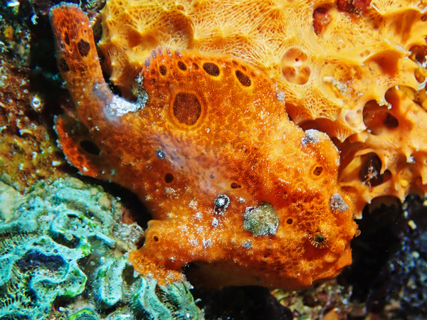
We drove back to Den Laman, changed the tanks over and went straight in at Bari Reef again. There was a lot less current than yesterday. We found the sea-horse again and were then able to spend a bit more time looking for the frog-fish which we did eventually find. A very good morning's diving.
We washed our gear and were back in the apartment before 2pm. We had sandwiches for lunch on the balcony. At 3, we walked into Kralendijk to find somewhere to watch England's first game in the World Cup. We looked at a couple of places but ended up going to El Mundo. This is a sports bar that has big screens all over the place and is well set up for the World Cup. There were a few other people in there watching the game including three or four other English fans so there was at least some atmosphere there. We got through a couple of buckets of Bright during what turned out to be quite an enjoyable game.
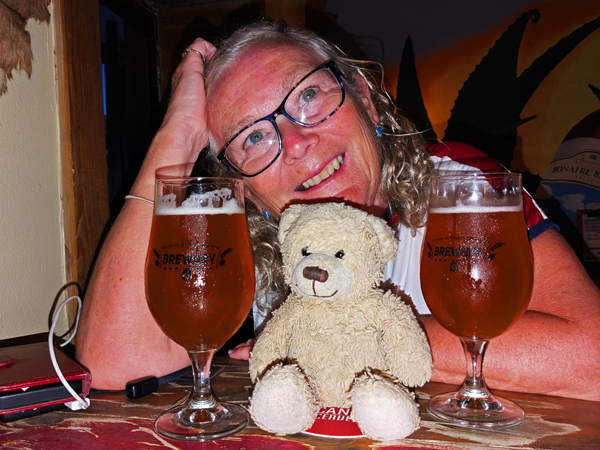
After we had finished our beers, we crossed the road and had a couple of drinks and a plate of bitterballen in the brewery before starting to walk back. We stopped for a drink in The Bucket Bonaire and then continued to Kanti Awa. We used to really like this bar as it had lovely sea views but it is now fully enclosed. Not sure if this is just for the World Cup or if it is permanent but it was not as nice as it used to be. We managed to avoid stopping in any of the Chinese bars on the rest of our walk and got back to the apartment at about 9:30. We had a couple more drinks on the balcony before bed.
Thursday 18th June A slightly later start today due to last night's celebrations. We had breakfast at about 8:30 but then had a couple of hours of recovery time before our first dive. First dive today was at Buddy's. A nice enough dive without being too spectacular. A large school of creole wrasse and a smaller school of oceanic trigger fish were probably the highlights.
We had planned to dive Something Special as the second dive but had a last minute change of plan and dived Front Porch instead. We had only ever dived here once previously but knew that the frog-fish and sea-horse were in that area and they may be easier to get to than from Bari Reef. There was plenty of parking there and it was another easy site to enter/exit.
Although we knew that we would be entering the site near to where the frog-fish was, we were surprised to see the block that he lives on right in front of us within about 30 seconds of entering. We had found less than two minutes into the dive. Because we did not have the swim to and from Bari, we had enough time and air to go and have a look around the small wreck that sits in about 30m before going to see the sea-horse. We found it in the usual place and then found the second one a couple of metres further up the rope. We had a look around the junk at the top of the rope before going back to the frog-fish to end the dive.
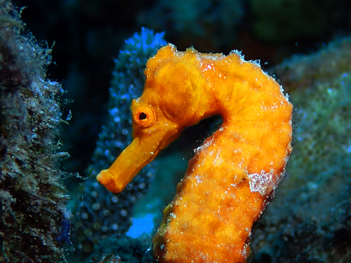
The third dive of the day was on Bari Reef at 5:20. Again, there was quite a bit of current so going North was hard work. A nice enough dive but always a bit sad diving here at this time and not seeing any turtles.
After washing our gear we were back in the apartment at about 7pm. We had a drink on the balcony and then went down to the Breeze 'n Bites "Burger Night". The service was surprisingly good tonight as was the food. We returned to the apartment after eating and had another drink while watching Mexico v S. Korea.
Friday 19th June First dive of the day was before breakfast at Bari Reef. Thankfully, the current had completely dropped today making the trip North a lot easier than it was last night and we got as far as Buddy's. Still no turtles but we did see a couple of feathertail stingrays.
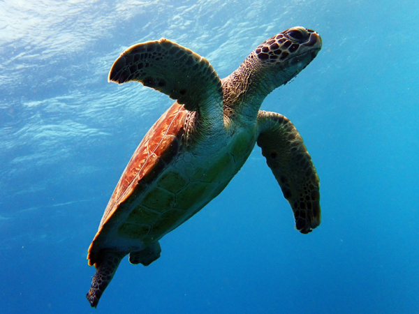
After breakfast, we took two tanks each and headed to 1000 steps. Here we had two very good dives with our surface interval on the beach. A few years ago, this site was very good for turtles but we had not seen many on our last couple of visits. Today, they appeared to be back. We saw four or five on the first dive when we went North and another three on the second dive to the South. We also saw another feathertail ray on the first dive.
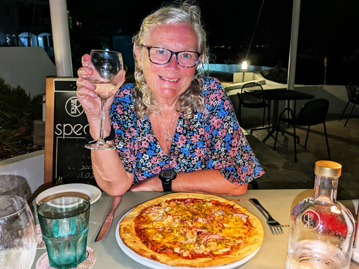
By the time we had swapped tanks, had lunch and sorted out cameras, we did not have too much time before the Scotland v Morocco game at 6pm. We had a couple of drinks while watching the second half of this game and then walked to Captain Don's for the first time on this trip. This place is now just called Habitat Bonaire and has had a lot of work done on it since Captain Don died but the restaurant area had not changed much. We had very good pizzas (more enjoyable than the last pizza I had here!) and a bottle of wine. It is still a lovely place to eat and tonight the service was very good. All in all, a very enjoyable meal.
Saturday 20th June We headed South this morning planning to dive at Salt Pier and Margate Bay. However, as Salt Pier came into view we could see that there was a ship there and the site would not be open to divers. (We later discovered that it has been there since Thursday so should be gone in a couple of days)
We decided instead to try the Angel City to Hilma Hooker dive. This entry looked easy enough when we arrived but by the time we had geared up, the size of the waves appeared to have increased and we decided not to risk it. We went instead to Aquarius, a site we knew had an easy entry/exit. This dive was nice enough. We saw another feathertail stingray. There suddenly seem to be a lot of them about! We also saw a couple of turtles including a huge male hawksbill that swam by us at quite a speed at the end of the dive.
We had breakfast there and then continued South to Margate Bay, another site with easy access. This was also very nice. We saw three turtles on this dive, the second of which we both thought was a loggerhead although it was too far away to be 100% sure.
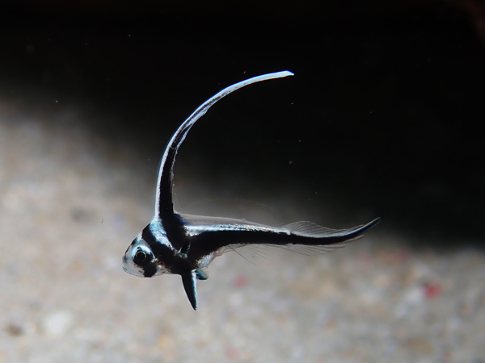
After the dive, we drove to Port Bonaire to collect new tanks and then came back to dive Front Porch again. The sea-horses took a bit of finding today and were not in very good positions for photographs but we did find them both as well as the frog fish which is a bit easier to spot. There is also quite a lot of other interesting stuff in the area including two very small juvenile trunk fish and a juvenile spotted drum.
We washed our gear back at Sand Dollar and collected tanks for tomorrow. We reheated the leftover pizza for lunch and then spent an hour or so on the the J-Team video call. After this, we had an hour or so to sort out cameras, etc for tomorrow. before it was time for drinks on the balcony.
Curaçao played their second World Cup game at 20:00. We had been a bit undecided about where to watch this and had considered walking into Kralendijk. However, when we had come up from the third dive today the Dutch game was being shown in the Eden Beach Bar and it had all sounded quite lively so we decided to give that a go. This proved to be a very good move. We realised it was going to be busy as we turned in from the main road and saw that the car park was full but we were still not really expecting there to be so many people there. There were two separate areas, both with big screens and the whole place was packed with Curaçao fans. We had not really appreciated how many people from Curaçao lived on Bonaire but the atmosphere was easily as good as it had been in Willemstad for the first game on Sunday.
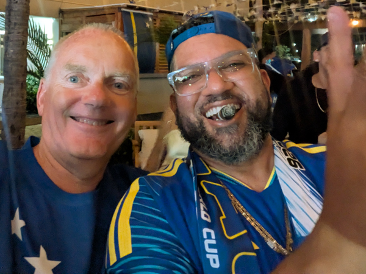
We managed to get a sun-lounger that we could both sit on with a reasonable view and bought ourselves a bucket of Bright. The game was excellent and just as nerve-wracking as watching England play at the end. The game finished 0 - 0 and Curaçao had got their first ever point at a World Cup Finals causing a lot of celebrations. We stayed around for 10 minutes or so at the end before making our way back to the apartment.
Sunday 21st June Our early morning dive on Bari Reef got cancelled this morning due to the amount of beer consumed last night. Our planned trip to 1000 Steps was also knocked on the head as it looks as if the ship has left Salt Pier meaning we should be able to dive there again. We had breakfast on the balcony and then drove to Salt Pier.
The conditions were better this morning meaning we could enter at the usual entry/exit point and have a look in the shallows for turtles. We spent a bit of time there but could not see any. It does look as if they have moved on. We did see a couple of green turtles as we got to the pier so they may still be around somewhere but not where they were four or five years ago. The rest of the dive was very enjoyable with perfect conditions. We took our time going along the pier and were able to do a 100 minute dive.
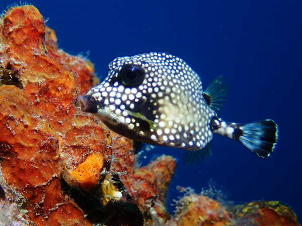
For our second dive, we drove back to Something Special. This was another easy, long dive in good conditions. All very enjoyable without seeing anything particularly spectacular.
We returned to the apartment for a quick lunch and were back in the water exactly an hour after getting out. We had another dive from the pier down to Front Porch to see the sea-horses and frog-fish. The sea-horses had moved today so you could just about get them both in the same photo. It was an easy swim back with no current. This ended what has been a very good first week of diving here. The only disappointment has been the lack of turtles. We have seen plenty of them but the green turtles seem to have gone from Salt Pier and we have not had any long encounters with hawksbills.
We finished diving by 4:30 and quickly washed our gear. We were keen on getting to the Breeze 'n Bites happy hour which was from 5 - 6. The later start to the day and the long dives meant that we did not have much time. We are having a day off diving tomorrow so were keen on a few drinks. We had quick showers and were down in the bar by 5:15. Despite getting there a bit later than planned, we managed to have a few cocktails before happy hour ended.
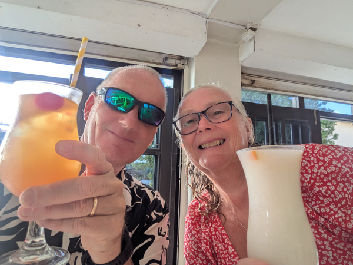
We returned to the balcony to watch the sunset and have a look at today’s pictures while have a few more drinks. We walked to Captain Don's just after 8 and had very good meals. We resisted the temptation of the pizzas and both had fajitas this time. By the time we walked back to the apartment we were both worn out and just had one more drink before bed. A relatively early end to the session.
Monday 22nd June We were both awake by 8ish and after breakfast, we had a couple of trips in to Kralendijk. First we drove to The Warehouse for the next weeks supplies, stopping for petrol on the way. After an hour or so recovery time, we had a trip into the centre. We stopped for a look in the Dive Friends shop and then parked in town and had a look round some of the souvenir shops before going back to Daily Catch for lunch (one meal between us this time). We went to one more souvenir shop before returning to Den Laman.
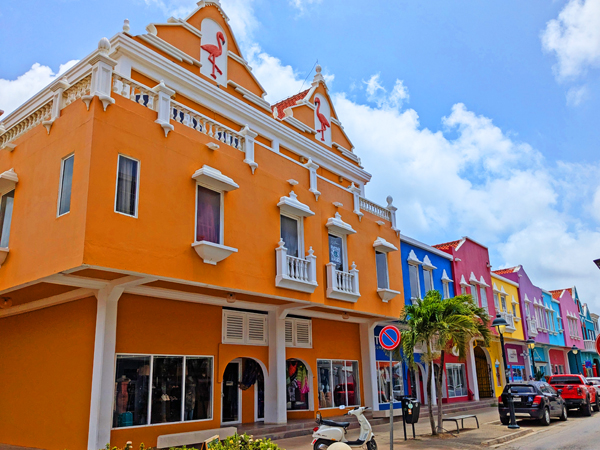
We parked the car back at the apartment and went for a look at the shops near the roundabout. We called into Sand Dollar to see if Ilsa was still there (she wasn't) and then went to Luciano across the road for ice-creams.
We did not do much else for the rest of the day. Roz did go for a swim but most of the afternoon and evening was spent lazing around in the apartment, watching the football or sitting on the balcony. Cooked pasta for tea.
Tuesday 23rd June An early start again today due to England kicking off at 4pm. First dive was Bari Reef down to Front Porch. This was an excellent dive. We saw a large hawksbill as we were going down the reef and saw it again on our way back. Both times, it swam out away from us so we could not spend much time with it but at least we know it's there. The area around Front Porch was as good as ever with both the sea-horses and the frog fish in the usual places. There are now three tiny juvenile trunk fish at the bottom of the block with the frog fish on it as well as a juvenile spotted drum so plenty to look at there. We also had a few minutes with a green turtle as we got back to Bari Reef.
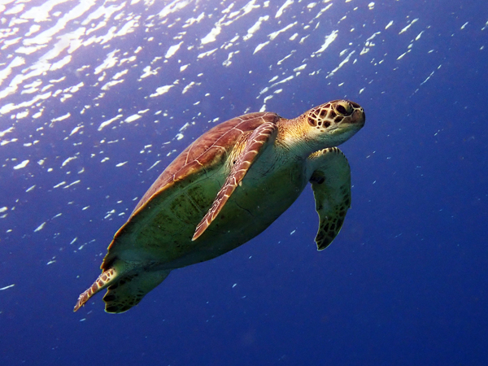
After breakfast, we drove South again to Salt Pier. There is still a lot of salt piled up there so we want to dive as often as we can there in case another ship comes in. We used the Southern entry point today and did a mirror image of the dive we did two days ago. There did not appear to be any turtles around but as we were getting close to the exit point we found one. We were able to stay with this one for about ten minutes before exiting.
We had been told yesterday that frog fish had been seen in the shallows near Yellow Submarine so we went there for our third dive. We knew they had not been seen for a while so we were not overly optimistic. We think we were looking in the right area but were unable to find them. Still a nice dive.
We washed our gear back at Sand Dollar and had a quick lunch before walking back into Kralendijk. We went to El Mundo again and got through a couple of buckets of Bright while watching a fairly dire game. This had been a very good place to watch the football with good friendly service. However, today they overcharged us and when we queried it, they claimed it was "World Cup prices" that had been in place since the start of the tournament. There was no evidence of this anywhere and we were not charged these prices the first time we were here. They eventually gave us a refund but we wont be going there again.
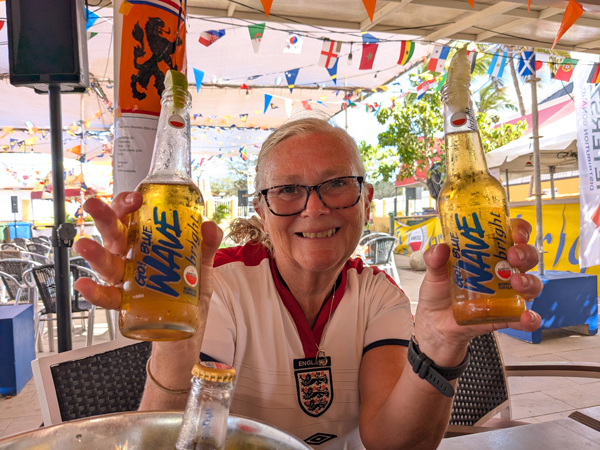
The Brewery is closed on a Tuesday so after the game we went to Het Consulaat a similar Dutch place that we had not been to before. This was a very good bar and maybe where we watch England's next game. Kanti Awa was also closed for some reason so we stopped for a few drinks at Harbour Village. We have eaten here once a long ago but had not been in for a while. The bar here was another very good find. We had a few glasses of wine and a large mixed snack plate before back back to the apartment.
Wednesday 24th June We had just about fully recovered by 10:00 but were not bothered about going too far today. We picked up a couple of tanks each and went to Something Special for our first dive. As usual here, it was a nice enough dive without seeing anything particularly exciting. We had a quick trip to the Chinese supermarket and then went back to Front Porch for the second dive. There was a lot of activity here today. The frog fish was not in his usual place when we went in but we found him on the rope about 50cm away. After a few minutes, he "swam" back to his usual spot. The sea-horses were hard to find today but we did find them both and also saw them moving around. The rest of the dive was very enjoyable mainly looking round in the rubble in the shallows.
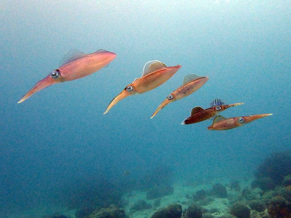
After a late lunch, we went down and did our third dive from the pier. We went North this time. The large schools of fish, particularly the creole wrasse, and five friendly squid were probably the highlights. An earthquake of magnitude 7.4 hit Venezuela while we were underwater. We heard a rumbling sound and could see some of the sponges vibrating. I thought it was something to do with the cruise ship leaving but we found out about the earthquake when back in the room.
We were back in the apartment by about 6:45 and watched the second half of Scotland v Brazil before going over to get kebabs from Döner Station. We had a couple of drinks but a relatively early night.
Thursday 25th June Another early start with a pre-breakfast dive on Bari Reef. We went South to Front Porch again. We found the sea-horses and found the frog-fish in a better than usual position for photographing. Another very good dive but no sign of the turtles we had seen the last time we dived this way.
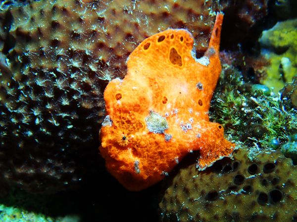
After breakfast we headed South with two tanks each. The sea was calmer today and we were able to get in at Angel City. We had been given very full tanks today (I was starting with 240 bar) so we were able to spend a bit more time than usual on the outer reef. This as quite lucky as we went South initially and found a very sleepy looking green turtle. After he had swam away, we went back North and continued on the outer reef until we got to the Hilma Hooker. We had time to have a look round the wreck and had a dive of 96 minutes by the time we got back to the entry point.
We went back to Salt Pier for the third dive. We went in at the Southern entry point today. Another good long dive although we did not see a turtle until one came up for air after I had taken my gear off and was helping Roz get out of the water. We did see an eagle ray as we were swimming back away from the pier.
We had talked about doing a fourth dive today but the first three dives had all been long and by the time we were back at Sand Dollar, it was already about 3:30 and we had not had lunch yet. We washed our gear, had showers and lunch and then spent a couple of hours watching the afternoon's football instead. Today was Curaçao's third game. We had no real desire to be in a bar by 16:00 today as we want to dive tomorrow morning so watched it in the apartment until they went 2 - 0 down. They are now out of the World Cup.
After a bit of time lying on the balcony, it was time for a couple of drinks. The Netherlands game was effectively over not long after it had started so we sat on the balcony with a couple of drinks while looking at photos. Breeze 'n Bites was almost totally empty tonight as they only have one small TV and most people on the island were watching the Dutch game. We went down anyway for the burger night which was very good again. We had one more on the balcony before bed.
Friday 26th June A slightly later start today but we still started with a pre-breakfast trip to see the frog-fish and sea-horses. One of the sea-horses was in a very nice position for being photographed and the frog fish had moved again. A good way to start the day as usual.
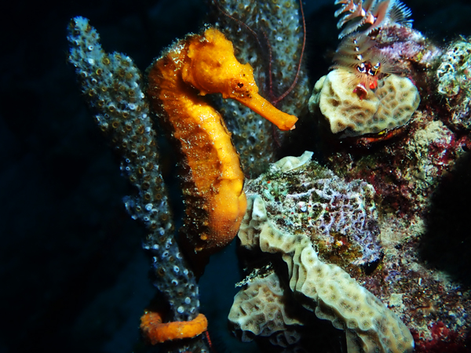
After breakfast, we took two tanks each to 1000 Steps again. We did two dives of over 100 minutes each, one to the North and one to the South. On the first dive, we saw two eagle rays although we were not able to get too close to either. Both dives featured a few turtles. We think we saw five on the first dive but this number is not definite as there was a lot of moving around and it was hard to count them precisely. On the second dive we had not seen any for most of the dive but had four good sightings in the last ten minutes or so.
As with yesterday, we both agreed that three dives was enough for one day particularly with the time we had spent underwater today. We returned to Sand Dollar, washed our gear and had lunch while watching football again.
After our usual evening drinks on the balcony, we walked to Captain Don's. We had pizzas again with a bottle of wine. Had one more drink each on the balcony before bed.
Saturday 27th June We were up at six. We had collected tanks yesterday so after cups of tea on the balcony, we collected our gear and headed South. We were planning on diving Salt Pier but it was closed to divers when we got there due to the imminent arrival of a ship. It looks as if we have dived there for the last time on this trip. We had planned to dive Vista Blue as our second dive so went there for our first dive instead.
The first half of this dive was not great. The vis was poor and we did not really see anything of any interest. The second half was better. We saw three green turtles and were able to spend quite a bit of time with each of them. We were a bit undecided about where to do the second dive but chose to go back to Margate Bay. This was a good choice. We saw three more green turtles albeit not quite as closely as on the previous dive. We also saw an eagle ray. We saw it in the shallows as we were heading back towards the buoy line and then more closely when we were at the rope. We were very close to it for a few minutes before it swam off.
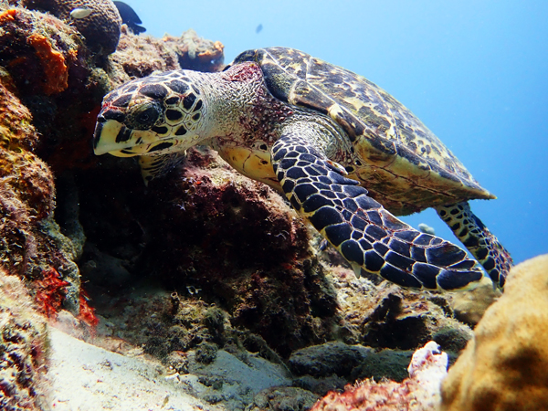
Dive 3 was probably the best dive of the trip so far at Front Porch. We went in, saw the frog-fish and then went and found the sea-horses. As we were coming to the end of our time with the sea-horses, Roz spotted a hawksbill turtle going up for air. It came back down very close to us and we were able to spend about half an hour with it before we started getting short of bottom time. This was the first time since getting to Bonaire that we have had a long encounter with a hawksbill. As usual with hawksbills, it was completely unbothered by us as it moved along the reef eating coral.
We returned to Sand Dollar, washed our gear and ate the remains of last night's pizza for lunch. The England game today was a 17:00 kick-off so after eating, we walked back into Kralendijk. We were not going back to El Mundo and wanted to watch the game in Het Consulaat. However, it does not open until 17:00 so we went to The Bucket for the first half. We had a bucket of Bright in there and then went over to Het Consulaat for the second half. Again, not the greatest of games but we have won the group and Scotland got knocked out at the same time so not a bad set of results.
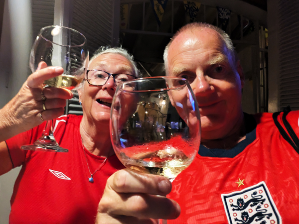
After the game, we walked back to The Brewery. The do not have teles but we got a table outside and were able to just about watch the Colombia v Portugal game on El Mundo's big screen over the road. After a couple in there we walked back to The Harbour stopping for one at Kanti Awa on the way. We had a few glasses of wine in The Harbour and a couple of drinks on the balcony when we got back. A very enjoyable day all round!!
Sunday 28th June Our final day of diving. We had decided to have a bit of a more relaxing day today and just do two dives. We knew it would be a late start again and we also wanted to go to the Breeze 'n Bites Happy Hour. We had been a bit undecided about which dive sites to do. For the first dive we were torn between 1000 Steps and Salt Pier. However, Salt Pier is closed for diving and I did not feel like walking up and down 1000 Steps so we settled on diving Bari Reef for a final time. This also gave us another chance to look for the hawksbill that we saw yesterday.
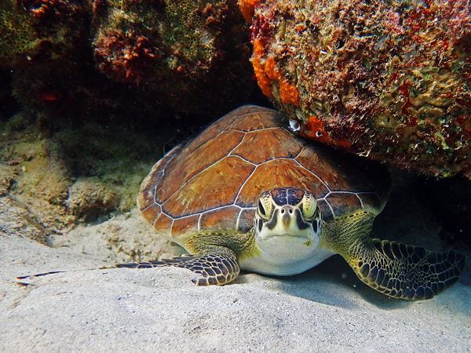
We did not see the hawksbill but we did find a green turtle and the smallest juvenile spotted drum we have ever seen.
For the second dive we repeated the one we did at Front Porch yesterday. We said goodbye to the sea-horses and frog-fish who will probably be relieved to see the back of us! No sign of the hawksbill today.
That completed our diving for this trip. 53 dives at average time of 91 minutes and 26 seconds. We drove back to Sand Dollar and washed all our gear for the last time.
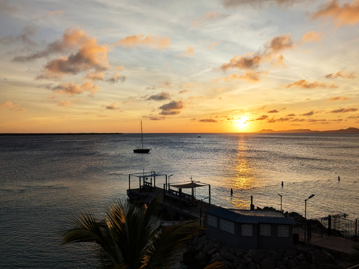
We had lunch while watching Canada v South Africa and went down to Breeze 'n Bites just after 5. After a couple of pina coladas we returned to the balcony and watched probably the best sunset we have seen on this trip. Once it was dark we looked at the photos from the last couple of days before heading off to Captain Don's. We started with another couple of cocktails and then had a bottle of wine with our pizzas. A couple more drinks on the balcony when we got back completed a very enjoyable session.
Monday 29th June Our last day in Bonaire. We were due to fly back to Amsterdam at 21:20 so had paid for an extra night so that we could stay in the apartment for the day. After breakfast on the balcony, we went down and checked-out of the dive centre. This involved giving back our weight belts and donating my left over beer to Darcey.
We did not have too much we needed to do today. After bringing up our dive gear, we started packing while lazing around in the apartment or on the balcony. We had leftover pizza for lunch when the Brazil v Japan game started. After the game we walked down to the Dive Friends shop to buy Roz a replacement dive torch. We stopped for ice-creams on the way back and also had a look round the souvenir shop for more turtley things.